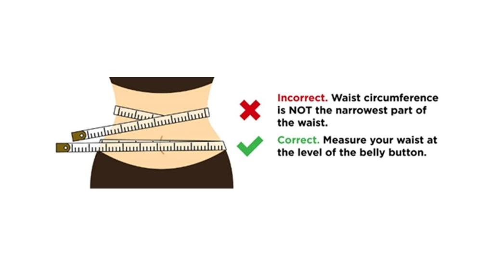
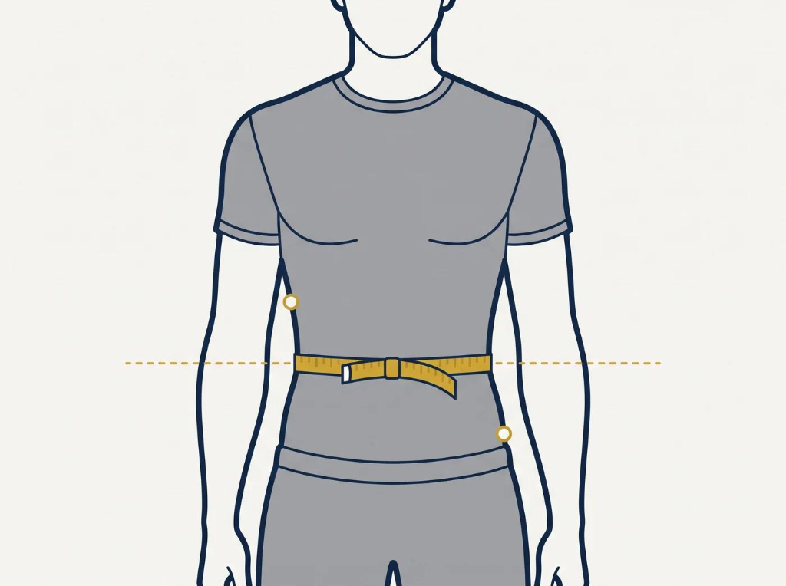
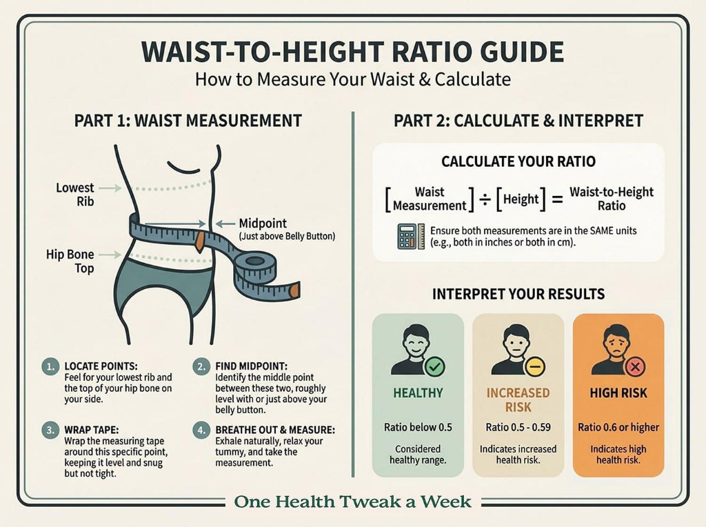
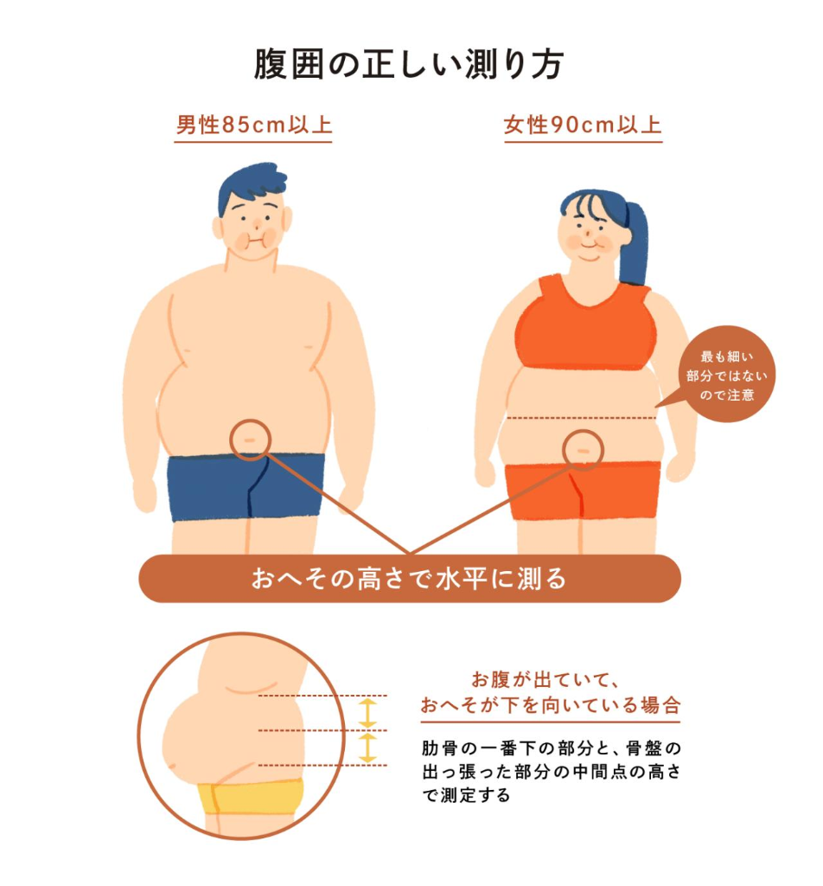

How to Measure Waist for Army WHtR: Complete Guide (2026)

Knowing how to measure waist for Army WHtR screening is essential for understanding the U.S. Army's updated body composition requirements. Under Army Directive 2026-13, the Army replaced its previous height and weight tables and circumference-based body fat assessment methods with the Waist-to-Height Ratio (WHtR).
The updated method uses waist circumference and height to calculate a simple ratio. The Army measures waist circumference directly at the navel (also known as the belly button) and divides it by height in inches. The published passing standard is a WHtR strictly below 0.55.
This comprehensive guide explains where to measure your waist, how to use a measuring tape accurately, which common taping mistakes to avoid, and how to calculate and interpret your results for Army compliance.
Where Does the Army Measure Waist Circumference?
Under the current Army WHtR procedure, waist circumference is measured at the navel. This is fundamentally different from measuring the narrowest part of the waist or using the former multi-site circumference tape test.
For an accurate personal measurement, identify your navel before positioning the measuring tape. Keep the tape around your waist at that exact level rather than moving it upward toward your ribs or downward toward your hips.
Correct placement matters because even a quarter-inch difference in waist circumference can change your calculated waist-to-height ratio from passing to exceeding the standard.

For an official screening, always follow the latest instructions provided by your unit or authorized assessment personnel recorded on DA Form 5500.
How to Measure Waist for Army WHtR Step by Step
Follow these five steps to ensure an accurate, reliable, and repeatable measurement:
Step 1: Prepare a Flexible Measuring Tape
Use a flexible, non-stretch measuring tape (such as a vinyl or fiberglass tape) that wraps cleanly around your waist without bending or twisting. A standard body-measurement tape is ideal for checking your numbers at home. Check out our recommended measurement gear for military-compliant equipment.
Make sure the tape is readable and that its measurement markings are clear. Avoid using a metal retractable builder's tape, a damaged cloth tape, or an elastic tape that stretches when tension is applied.
Step 2: Stand in a Natural Position
Stand upright on a flat, level surface with your feet together or shoulder-width apart, and let your arms hang relaxed at your sides.
Relax your abdomen. Do not deliberately pull your stomach inward, suck in your gut, arch your back, or change your posture to manipulate the number. A consistent, relaxed standing position ensures repeatability across subsequent duty-day measurements.
Step 3: Position the Tape at Your Navel
Place the measuring tape around your abdomen at the exact level of your belly button. Check in a mirror or have a partner verify that the tape follows a completely horizontal path around your torso, parallel to the deck.
The tape should sit snug against the skin or lightweight physical training (PT) uniform without compressing soft tissue or indenting the abdominal wall.

Step 4: Record the Waist Measurement
Take the reading at the end of a normal, relaxed exhalation. Read the measurement carefully and record it to the nearest 0.1 or 0.25 inch according to the Army's published WHtR calculation method.
If you are checking your measurement at home, take three consecutive readings and calculate the average to eliminate measurement variance. However, do not substitute personal measurements for the official Army assessment process conducted by certified leadership teams.
Step 5: Calculate Your Waist-to-Height Ratio
Once you know your waist circumference and height, divide your waist measurement by your standing height using the exact same unit (both in inches or both in centimeters).
For example, a Soldier with a waist measurement of 38 inches and a standing height of 70 inches (5'10") has a WHtR of:
38 ÷ 70 = 0.543 (Passing)
To learn all the mathematical details and review passing examples, read our dedicated guide on How to Calculate WHtR for Army (Formula & Examples).
Test Your Ratio Instantly:
You can use our automated Army Height and Weight Calculator to instantly enter your waist and height, calculate your WHtR ratio, and verify whether you meet the 0.550 screening threshold.
Army WHtR Standard: How Does the Measurement Affect Your Result?
The published Army waist-to-height ratio threshold is below 0.55. A ratio of 0.55 or higher does not meet the numerical screening threshold.
Consider these examples for a Soldier standing 70 inches tall:
- Waist: 36 inches → 36 ÷ 70 = 0.514 → Pass (Below 0.55)
- Waist: 38 inches → 38 ÷ 70 = 0.543 → Pass (Below 0.55)
- Waist: 39 inches → 39 ÷ 70 = 0.557 → Exceeds (0.55 or higher)
Notice how a single inch difference between 38 inches and 39 inches changes the outcome from a passing result to a confirmed screening failure. This demonstrates why accurate tape placement and standardized measuring technique are paramount.

Remember that a personal calculation is not an official pass or fail determination. Under Army Directive 2026-13, an initial non-passing result requires a same-day confirmation measurement by an independent team before enrollment in the Army Body Composition Program (ABCP).
Common Waist Measurement Mistakes to Avoid
When measuring waist circumference for Army WHtR, avoid these six common errors:
- Measuring at the wrong location: The current Army procedure measures at the navel, not the natural narrowest waist indent or across the iliac crest (hips).
- Angling or slanting the tape: Allowing the tape to sag in the back or ride up around the ribs creates an artificially high circumference reading.
- Pulling the tape too tightly: Applying excessive tension depresses soft tissue and violates AR 600-9 standardized taping protocol.
- Holding your breath or sucking in your stomach: Tensing abdominal muscles or holding breath produces erratic, non-repeatable measurements.
- Using an inaccurate or worn-out tape: Old cloth tapes stretch over time; ensure your tape markings are calibrated and legible.
- Rounding the result prematurely: Keep sufficient decimal precision during ratio calculations to avoid erroneous rounding decisions.

Consistency, relaxed posture, and careful tape placement help eliminate avoidable errors and ensure your readiness assessment is fair and precise.
Frequently Asked Questions
Does the Army measure waist at the belly button?
Yes. The current Army WHtR procedure measures waist circumference directly across the navel, or belly button, keeping the tape level with the floor.
What measuring tape should I use?
A flexible, non-stretch fiberglass body-measurement tape is recommended for personal checks. Official screening must follow the Army's prescribed assessment procedure with calibrated equipment.
What is the Army's passing WHtR?
The published threshold is strictly below 0.550. A result equal to or greater than 0.550 does not meet the numerical standard.
Is the old Army tape test still used?
The previous circumference-based tape test (neck, abdomen, and hips) has been rescinded under Army Directive 2026-13. The authorized screening method is the single-site Waist-to-Height Ratio. If you want to review the previous equations, visit our Army Body Fat Calculator.
Can I measure my waist at home before an Army assessment?
Yes. A home measurement can help you understand the WHtR formula, check your personal progress, and prepare for your assessment, but it does not replace an official Army screening or its confirmation procedures.
Final Thoughts
Learning how to measure waist for Army WHtR screening starts with one critical detail: measure horizontally at the navel. Use a non-stretch flexible tape, maintain a natural standing posture, record your measurement carefully, and divide waist circumference by height to calculate your ratio.
For official decisions, always follow the latest Army guidance and instructions from authorized personnel.
Official Resources
- Army Body Composition Program (ABCP) →
- Official Army WHtR Frequently Asked Questions →
- Army's July 2026 Body Composition Policy Announcement →
- Use our Army Height and Weight Calculator to explore the calculation and related Army screening information.